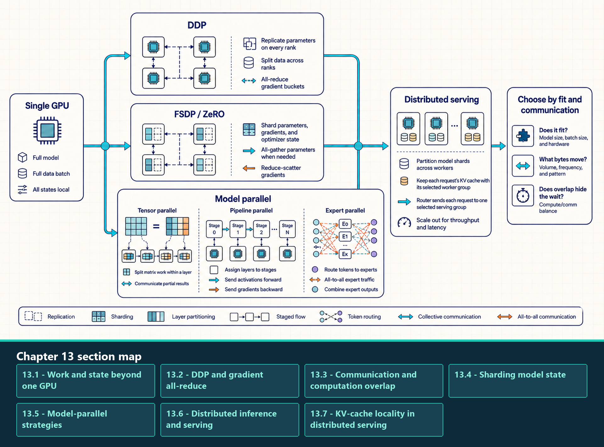
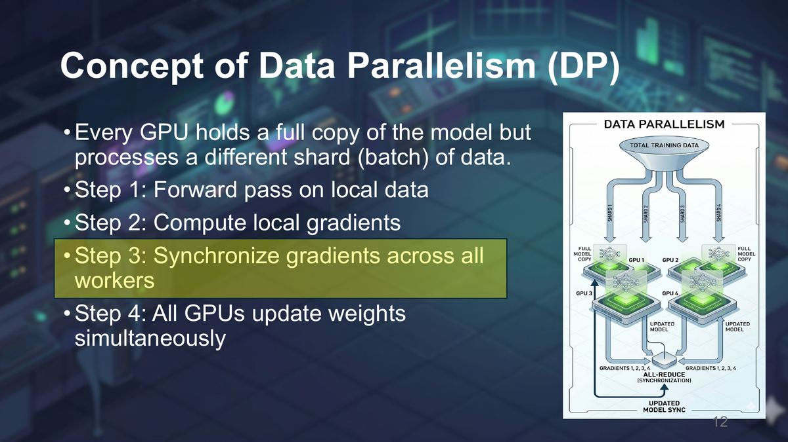
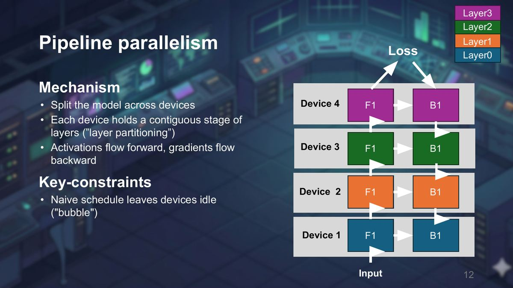
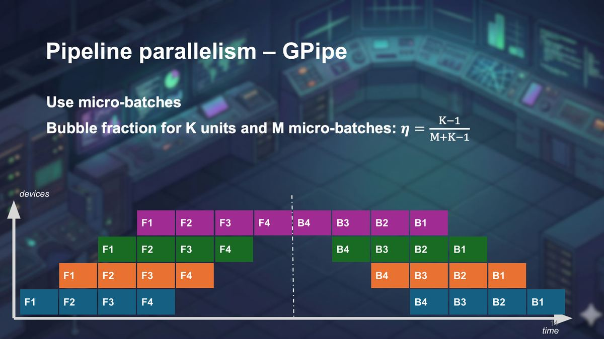

13 Distributed Training and Serving
Distributed training changes the problem from one GPU executing one copy of the workload to many GPUs coordinating state and computation. The central design question is what is replicated, what is sharded, and what must be communicated every step.
The scaling axis follows the object that prevents one device from meeting the target. Data parallelism splits examples or requests; sharded data parallelism splits model state; tensor and pipeline parallelism split model computation; expert parallelism splits expert modules and routes token representations.
Every split creates a communication schedule that must fit the topology and the user-facing metric. Replication, state sharding, model-parallel execution, and distributed serving divide different objects, so each produces different collectives, cache-placement rules, and waiting points.
Distributed training may replicate batches, shard model state, divide layer computation, split layer sequences, or route tokens to experts. Distributed serving may instead divide requests across worker groups or shard one model within a group.

Each training strategy is tied to the object it divides and the collective or point-to-point transfer it needs. In serving, a router selects one worker group and the request’s KV cache stays with that group unless an explicit migration policy pays the transfer or recomputation cost.
13.1 Work and state beyond one GPU
Scaling beyond one GPU means deciding which object is too large or too slow on one device. The answer determines the distributed strategy.
- Data: The training examples or serving requests. Splitting data increases throughput when each replica can fit the full model.
- Model state: Parameters, gradients, and optimizer state. Sharding state reduces per-GPU memory but introduces communication to gather or reduce the pieces that each step needs.
- Layer computation: Matrix multiplications and attention inside a layer. Tensor parallelism splits this work, but then partial results must be combined frequently.
- Layer sequence: The ordered stack of transformer layers. Pipeline parallelism places different layer ranges on different devices and moves activations between stages.
- Experts: Specialized modules in a Mixture-of-Experts model. Expert parallelism routes token representations to the devices where selected experts are placed.
Replication is simple but duplicates memory. Sharding saves memory or increases parallel compute, but it creates communication that must fit the topology. Distributed strategies are applications of collective communication and physical fabric constraints, not replacements for them.
The object being split determines the communication obligation: replicated models synchronize gradients, while split model work exchanges activations or partial results. The next question is how Distributed Data Parallel (DDP) turns replicated parameters and different local mini-batches into synchronized updates.
13.2 DDP and gradient all-reduce
Distributed Data Parallel (DDP) is the baseline multi-GPU training strategy when the full model fits on every GPU. Each process holds one model replica, receives a different mini-batch shard, computes local gradients, and then synchronizes gradients before the optimizer step.
13.2.1 torch.distributed and DDP execution
PyTorch DDP is a training strategy implemented above torch.distributed. The wrapper registers gradient hooks and groups gradients into buckets; the process group and its backend execute the all-reduces required to keep replicas synchronized.
- Rank: One distributed process participating in the job. A common setup uses one rank per GPU.
- Replica: A full copy of the model parameters on one rank. DDP keeps replicas numerically synchronized by all-reducing gradients.
- Local mini-batch: The data shard processed by one rank.
- Global batch: The effective batch across all ranks, usually local mini-batch size multiplied by number of data-parallel ranks and gradient-accumulation steps.
- Gradient all-reduce: Each rank contributes gradients, the gradients are reduced, and every rank receives the same synchronized result.
DDP works well when the model fits on each GPU and each step has enough computation to amortize synchronization. It does not reduce parameter memory because every rank stores a full replica. When model state is the memory wall, FSDP or another sharding strategy is needed.
The important DDP state relationship is replication: model state is copied on every rank, while the data stream is partitioned across ranks.

Replicas begin from compatible parameters. Backward hooks reduce gradient buckets, and every rank applies an equivalent optimizer update after the required synchronization. Framework policy determines whether the reduced result is represented as a sum or average.
The DDP schematic is a state-placement overview: each rank holds a model replica and processes a different local mini-batch. Gradient synchronization uses all-reduce so corresponding gradient elements agree before the replicated optimizers update their parameters.
The implementation pattern is one process per GPU: initialize the process group, map LOCAL_RANK to the local CUDA device, wrap the model with Distributed Data Parallel, shard the data stream with a distributed sampler, and let backward hooks launch gradient all-reduces. The code template follows the bucket-timing explanation so every line can be mapped to the mechanism.
13.3 Communication and computation overlap
In DDP, communication/computation overlap uses the order of backward propagation. Gradients for later layers become ready while earlier layers are still computing backward, so DDP can start all-reducing ready gradient buckets before the full backward pass completes.
- Gradient bucket: A group of parameter gradients packed together so DDP can launch fewer, larger all-reduces instead of one collective per tensor.
- Ready time: The moment all gradients in a bucket have been produced by backward propagation.
- Hidden communication: Communication that completes while independent backward computation is still running, so it does not extend step time.
- Exposed tail: The remaining communication after the last useful computation has finished. This tail directly increases iteration time.
Overlap has a cost. Small buckets may start earlier while reducing bandwidth efficiency because there are more collectives. Large buckets may use bandwidth better while starting later and leaving a larger exposed tail. The useful measurement is whether reducing collective time would still reduce the end-to-end training step.
The DDP reducer turns many parameter gradients into bucket-level communication. The bucket is the scheduling unit: it can launch when all gradients inside it are ready, even while earlier layers in the backward pass are still computing.
A bucket passes through four ordered steps:
- Form the buckets: Group parameter gradients using a configured limit such as
bucket_cap_mb. Smaller buckets can start earlier; larger buckets usually use bandwidth more efficiently. - Mark gradients ready: Autograd hooks mark each parameter gradient as backward propagation produces it. Parameter order and graph structure determine when every gradient in a bucket is available.
- Launch all-reduce: Reduce a ready bucket across the data-parallel ranks, usually through NCCL on NVIDIA GPUs. The communication overlaps only while independent backward computation continues.
- Measure the exposed tail: Measure communication that remains after backward computation finishes. This tail directly lengthens the training step.
The DDP implementation extends the Section 1.4 supervised loop with three distributed additions: each process owns a rank and its assigned GPU, the data stream is partitioned by rank, and backward propagation triggers gradient communication.
A slow DDP step can still come from local causes such as data loading, forward kernels, backward memory pressure, or optimizer state. Distributed causes add rank skew, all-reduce bandwidth, bucket timing, and topology placement.
Example: DDP training template. This runnable synthetic template shows process roles, rank-to-device mapping, sampler behavior, optimizer flow, backward synchronization, and cleanup. Launch it with torchrun --standalone --nproc-per-node=<gpu_count> script.py; replace the synthetic dataset and linear model only after this distributed control path works.
Code example: DDP training template
import os
import torch
import torch.distributed as dist
import torch.nn as nn
from torch.utils.data import DataLoader, DistributedSampler, TensorDataset
from torch.nn.parallel import DistributedDataParallel as DDP
def train_one_rank():
dist.init_process_group("nccl")
local_rank = int(os.environ["LOCAL_RANK"])
torch.cuda.set_device(local_rank)
device = torch.device("cuda", local_rank)
feature_count = 1024
class_count = 100
num_epochs = 2
generator = torch.Generator().manual_seed(0)
dataset = TensorDataset(
torch.randn(4096, feature_count, generator=generator),
torch.randint(class_count, (4096,), generator=generator),
)
sampler = DistributedSampler(dataset, shuffle=True)
loader = DataLoader(
dataset, batch_size=8, sampler=sampler, num_workers=4, pin_memory=True
)
model = DDP(nn.Linear(feature_count, class_count).to(device), device_ids=[local_rank])
loss_fn = nn.CrossEntropyLoss()
optimizer = torch.optim.AdamW(model.parameters(), lr=3e-4)
try:
for epoch in range(num_epochs):
sampler.set_epoch(epoch)
for features, labels in loader:
features = features.to(device, non_blocking=True)
labels = labels.to(device, non_blocking=True)
loss = loss_fn(model(features), labels)
loss.backward()
optimizer.step()
optimizer.zero_grad(set_to_none=True)
finally:
dist.destroy_process_group()
if __name__ == "__main__":
train_one_rank()Backward propagation is the key distributed boundary in this template: DDP hooks mark gradient buckets ready and submit their reductions while other backward work may still run. Measure bucket timing, the exposed communication tail, and the slowest rank before changing bucket sizes, rank placement, or the communication backend.
13.4 Sharding model state
Fully Sharded Data Parallel (FSDP) supports several sharding strategies. Under FULL_SHARD, parameters, gradients, and optimizer state are sharded across ranks outside their materialized use windows. Other strategies replicate or retain more state. Full sharding reduces per-GPU memory but introduces parameter all-gather and gradient reduce-scatter around layer execution.
In a full-shard path, most model state remains partitioned across ranks. Before a layer runs, FSDP gathers the parameter shards needed by that layer; afterward it may release or reshard them according to policy. The memory saving therefore adds scheduled communication and temporary full-parameter windows around layer execution.
13.4.1 DeepSpeed and ZeRO implementations
Zero Redundancy Optimizer (ZeRO) names the staged sharding strategy, while DeepSpeed is a distributed-training framework that implements ZeRO-family state placement together with optimizer, pipeline, and runtime integrations. PyTorch FSDP is a separate framework with selectable sharding strategies; its FULL_SHARD mode partitions parameters, gradients, and optimizer state.
Choose the framework after the required state placement and collective schedule are clear. Configuration names differ, but memory savings and communication costs follow the same parameters, gradients, optimizer state, all-gather, and reduce-scatter objects.
PyTorch FSDP and DeepSpeed ZeRO Stage 3 are related full-sharding approaches with similar state-placement goals, but they are distinct APIs and implementations with different policies and scheduling behavior. The comparison below therefore follows the parameter, gradient, and optimizer-state lifecycle instead of treating the framework names as interchangeable.
The ZeRO family names three progressively broader state-sharding choices:
- ZeRO-1: Shards optimizer state while parameters and gradients remain replicated. With four ranks and an assumed 8-byte-per-parameter Adam-state budget, the optimizer-state portion falls from about 8 to about 2 bytes per parameter on each rank; other optimizers and precision layouts differ.
- ZeRO-2: Also shards gradients. Reduce-scatter timing follows bucket readiness, hooks, overlap, and implementation policy rather than an unconditional immediate layer-by-layer rule.
- ZeRO-3: Also shards parameters outside their materialized use windows. Implementations may reshard or retain gathered parameters; temporary full parameters and communication buffers still consume memory.
The comparison below holds the data-parallel goal fixed and shows which model-state objects remain replicated or become sharded. The final column identifies the communication phase introduced by each broader sharding choice.
| Strategy | Parameters | Gradients | Optimizer state | Main timing cost |
|---|---|---|---|---|
| DDP | Replicated | All-reduced and replicated | Replicated | Gradient all-reduce after buckets become ready |
| ZeRO-1 | Replicated | Replicated | Sharded | Optimizer-state coordination with modest extra communication |
| ZeRO-2 | Replicated | Reduce-scattered or sharded | Sharded | Gradient reduce-scatter during backward |
| ZeRO-3 / FSDP FULL_SHARD | Sharded outside layer execution | Reduce-scattered and sharded | Sharded | Parameter all-gather before forward/backward layer use plus reduce-scatter after gradients |
Full sharding has separate forward and backward communication phases. Parameters are all-gathered before forward computation and may be reshared afterward. If forward released the full parameters, they are gathered again before backward computation. As gradients become ready, reduce-scatter combines them and leaves each rank with its local shard. Prefetch settings can overlap a future gather with current computation, but they may raise peak memory by materializing parameters earlier.
One full-shard layer follows this communication sequence:
- Gather before forward: All-gather parameter shards so the layer can compute. Prefetching too early increases peak memory.
- Reshard after forward: Release or reshard the full parameters according to the selected strategy. Keeping them improves reuse but reduces memory savings.
- Gather before backward: All-gather parameters again when forward released them. Backward prefetch can overlap this transfer with compute while increasing live memory.
- Reduce after gradients are ready: Reduce-scatter gradients and retain each rank’s local shard. Communication that remains after compute becomes the exposed tail.
Full sharding reduces persistent per-rank model state by adding timed parameter gathers and gradient reduce-scatters. Its benefit depends on peak-memory relief compared with exposed communication and temporary materialization. The next question is whether splitting layer computation or the layer sequence is a better fit when state sharding alone cannot meet the target.
13.5 Model-parallel strategies
13.5.1 Model-parallel execution and Megatron-LM
Model parallelism splits one model execution across ranks. Tensor parallelism divides work inside a layer, pipeline parallelism assigns layer ranges to stages, and expert parallelism routes token representations to specific expert ranks. Megatron-LM implements several such layouts; the performance question is where each layout forces ranks to exchange partial results.
Two common forward-path partitions show where collective communication appears:
- MLP Block Sharding: The first linear projection (Gate & Up projections) is sharded column-parallel: W = [W₁ | W₂]. Each GPU computes its local multiplication Yᵢ = XWᵢ without communication. The second down-projection is sharded row-parallel: V = [V₁ᵀ | V₂ᵀ]ᵀ. Each GPU computes YᵢVᵢ, and a single All-Reduce combines the partial sums: Z = Y₁V₁ + Y₂V₂.
- Self-Attention Block Sharding: The Query, Key, and Value projections are sharded column-parallel, keeping attention head computations local to each GPU. The attention Output projection is sharded row-parallel, requiring a single All-Reduce before the residual connection.
The key performance fact is where the collective is placed. Tensor parallelism tries to keep intermediate slices local through several operations, then synchronizes only when the full hidden vector is needed by the residual path, normalization, or the next block.
| Transformer subpath | Local tensor-parallel work | Collective placement | Why the placement matters |
|---|---|---|---|
| MLP gate/up projection | Column-parallel output channels; each rank computes its own intermediate slice | No immediate forward all-reduce | The activation function can run locally on each slice |
| MLP down projection | Row-parallel input channels; each rank computes a partial hidden output | All-reduce after the down projection | Partial sums must be combined before the residual connection |
| Attention Q/K/V projection | Heads or head slices are assigned to ranks | Often no immediate all-reduce | Attention for local heads can proceed without synchronizing every projection |
| Attention output projection | Each rank computes a partial contribution back to hidden dimension | All-reduce before block output is complete | The next residual or layer needs the full hidden vector |
Pipeline parallelism assigns contiguous layer ranges to K stages and moves each micro-batch through them in order.

During fill, later stages wait for their first input; during drain, earlier stages finish before the last micro-batch leaves the pipeline. These empty intervals form the pipeline bubble. Figure 13.4 shows the occupied and idle intervals for a GPipe schedule.

Reading the pipeline schedule
Figure 13.4 is a schematic GPipe schedule, not a measured timing trace. Pipeline stages appear on the vertical axis and schedule time on the horizontal axis. Labeled blocks show forward and backward work for each micro-batch; empty regions show fill, drain, or waiting time. Under the balanced-stage assumptions of Equation 13.1, increasing the number of micro-batches reduces the first-order fill/drain fraction. The activation-memory effect is schedule-dependent: with a fixed micro-batch size, additional in-flight work can extend activation lifetimes, while with a fixed global batch, increasing the micro-batch count usually reduces each micro-batch’s size. Check peak memory for the actual schedule and retention policy.
With M equal-duration micro-batches and balanced stages, the first-order bubble fraction is:
\[ \text{bubble}_{\text{fraction}} = \frac{K - 1}{M + K - 1} \tag{13.1}\]
Here K is the number of pipeline stages and M is the number of micro-batches per global step. This first-order GPipe fill-and-drain model assumes balanced stages, equal micro-batch times, and no additional communication or scheduling delay. Increasing M reduces the relative fill/drain bubble under those assumptions, while more micro-batches may keep additional activation state live.
Worked calculation - pipeline bubble
Inputs: Use K = 4 pipeline stages and M = 8 micro-batches.
Substitution: (4 - 1) / (8 + 4 - 1) = 3 / 11.
Result: The first-order bubble fraction is about 27.3 percent before stage imbalance, communication, or scheduling overhead.
Change to test: With M = 32, the estimate becomes 3 / 35, or about 8.6 percent, while more micro-batches keep activation state live.
- Pipeline bubble: Idle stage time caused by pipeline fill, drain, imbalance, or waiting for neighboring stages.
- GPipe: A pipeline-parallel training schedule that uses micro-batches to keep stage devices busier than a single large batch would.
- Micro-batch: A smaller slice of the global batch that can be advanced independently through pipeline stages.
- Stage balance: Pipeline throughput is limited by the slowest stage, so layer partitioning matters as much as the communication path.
Mixture of Experts (MoE) changes the distributed problem again. A model contains many expert modules, but each token is routed to only a subset. Expert parallelism places different experts on different GPUs. The router dispatches token representations to the devices holding the selected experts, and the outputs must be gathered back into the original token order. This often creates all-to-all communication pressure, load-balancing risk, and sensitivity to router skew.
- MoE: Mixture of Experts: a sparse model structure with many expert submodules where each token activates only selected experts.
- Expert parallelism: Placement strategy where experts are distributed across GPUs and tokens are routed to the devices that hold their selected experts.
- All-to-all pressure: Each rank may send different token slices to many other ranks and receive different slices back, which can dominate sparse-model performance.
- Communication condition: Sparse compute reduces arithmetic only when router balance, token dispatch, and all-to-all topology keep communication from becoming the bottleneck.
One expert-parallel layer follows a concrete state path: the router assigns one or more expert destinations to each token; each rank packs token representations by destination; an all-to-all dispatch moves those slices to the expert-owning ranks; local experts compute their outputs; a second all-to-all returns the results; and the runtime restores original token order before the next model operation. Imbalanced destinations make the busiest expert or rank determine the step time.
| Strategy | What is split | Memory effect | Communication pattern | Best fit |
|---|---|---|---|---|
| DDP | Data batch | No per-rank model-state saving | Gradient all-reduce | Model fits per GPU |
| FSDP | Parameters, gradients, optimizer state | Large per-rank state reduction | All-gather and reduce-scatter | Model state exceeds one GPU |
| Tensor parallelism | Layer tensors | Medium | Frequent collectives | Large layers on fast fabric |
| Pipeline parallelism | Layer sequence | High | Activation transfer between stages | Deep models across devices |
| Expert parallelism | Experts and token routes | Model-dependent | All-to-all | Mixture-of-Experts models |
13.5.2 Activation-memory derivation for GPT-style training
Large-model training often hits the activation wall before the parameter wall. Parameters are static with respect to batch size and sequence length, but saved activations grow with both. In GPT-style transformers, attention score tensors can also scale quadratically with sequence length if the implementation materializes them.
Estimate saved activation storage by counting two common tensor shapes. Let \(B\) be local micro-batch size, \(T\) sequence length, \(d\) hidden width, \(H\) attention-head count, \(L\) local transformer layers, and \(s\) bytes per stored element.
- A hidden-sized tensor has \(BTd\) elements and occupies \(BTds\) bytes per layer.
- A materialized dense attention matrix has \(BHT^2\) elements and occupies \(BHT^2s\) bytes per layer.
If each layer saves \(n_{\text{hidden}}\) hidden-sized tensors and \(n_{\text{score}}\) attention-matrix-sized tensors, their combined payload is approximately
\[ A \approx Ls\left(n_{\text{hidden}}BTd+n_{\text{score}}BHT^2\right). \]
For an illustrative calculation, assume \(n_{\text{hidden}}=4\), \(n_{\text{score}}=1\), \(B=1\), \(T=2048\), \(d=4096\), \(H=32\), \(L=10\), and \(s=2\) bytes. This gives
\[ A \approx 10\cdot2\left(4\cdot2048\cdot4096+32\cdot2048^2\right) =3{,}355{,}443{,}200\ \text{bytes}=3.125\ \text{GiB}. \]
These are assumed tensor counts, not measurements of a particular model. Actual counts depend on the layer implementation, backward algorithm, recomputation policy, and fused kernels. The estimate excludes weights, gradients, optimizer state, temporary workspaces, and allocator overhead; measure peak allocation before using it as a device-memory budget.
Several techniques change the saved tensors. Activation checkpointing discards selected forward intermediates and recomputes them during backward. FlashAttention-style kernels avoid materializing the full attention matrix. Sequence parallelism partitions activation work around tensor-parallel regions, with gathers and reduce-scatters where needed. Context parallelism partitions attention’s sequence dimension and exchanges key/value data or partial results inside attention. The exact per-rank saving depends on which tensors each implementation keeps or reconstructs.
This derivation explains why FSDP or tensor parallelism alone can leave training memory limited by activations. FSDP shards model state, while activations remain tied to local micro-batch and layer execution unless activation checkpointing, sequence parallelism, FlashAttention, or smaller micro-batches reduce them.
13.5.3 Column-wise and row-wise tensor-parallel communication
Column-wise and row-wise tensor parallelism describe where a linear layer is split and where the ranks must communicate. The distinction matters because splitting output channels and splitting input channels place collective operations at different points in the transformer block.
Read the tensor-parallel figure top to bottom: column-parallel work first, then row-parallel work and the collective it needs. The placement of the collective is the point of the diagram.
Megatron-LM-style tensor parallelism chooses where communication occurs by pairing column-parallel and row-parallel projections inside transformer blocks. A column-parallel linear layer splits output channels. Each rank computes its own output slice from the full input, so the forward edge can avoid an immediate all-reduce. The backward pass accumulates gradients for each local weight shard and may need to combine input gradients depending on how the following layer is arranged.
A row-parallel linear layer splits input channels. Each rank computes a partial output from its input slice and weight shard, then the partial outputs must be summed. That summation is an all-reduce in the forward path, and the placement of that all-reduce is why tensor parallelism is usually kept inside fast NVLink or NVSwitch domains.
The placement intuition is: keep attention heads or MLP intermediate channels local as long as possible, then reduce only when the full hidden vector is needed by a residual connection, normalization, or the next block boundary. This reduces communication frequency compared with naively synchronizing after every projection.
13.6 Distributed inference and serving
Distributed inference uses the same links, backends, and collective libraries as distributed training, while the user-facing metric changes. The goal includes latency, Time To First Token (TTFT), Time Per Output Token (TPOT), tail behavior, serving capacity, and tokens per second.
13.6.1 Distributed serving frameworks
A distributed serving framework combines request routing and cache ownership with replica, tensor-parallel, or pipeline-parallel worker groups. vLLM and SGLang can coordinate multi-GPU serving groups; TensorRT-LLM and related deployment stacks can execute compiled sharded engines on supported configurations. The framework choice follows the placement strategy and topology rather than defining them.
The critical ownership questions are which worker group holds the model shard, which group owns each request’s KV cache, which collectives lie on every decode step, and whether routing preserves that locality across replicas.
A serving design combines three decisions: how each model is split within a worker group, how requests are routed among groups, and where each request’s KV cache remains. Together they determine whether communication occurs at admission, during prefill, inside every layer, or for every generated token.
A common serving strategy keeps frequent collectives inside a node and scales across nodes by replicating serving groups. This avoids making every token depend on a slow cross-node path. When the model is too large for one node, the system must balance model sharding, cache locality, batch scheduling, and network cost.
- Tensor-parallel serving: Splits layer math across GPUs. It helps when one layer is too large or too slow for one GPU, but it may put collectives in the per-layer or per-token path, so fast intra-node links matter.
- Pipeline-parallel serving: Assigns different layer ranges to different devices. It can fit deeper models, but stage imbalance, micro-batch scheduling, and activation transfer can increase tail latency.
- Replica groups: Run multiple complete serving instances and route requests among them. This is often simpler than cross-node sharding when the model fits per group, and it can preserve low Time Per Output Token (TPOT).
- Router and cache locality: The router should avoid moving an active request away from the devices holding its KV cache unless the benefit outweighs the transfer cost.
- Cross-node sharding: A capacity or throughput option when one node is insufficient or another placement goal justifies it. It carries higher decode-latency risk when each token depends on cross-node communication with little independent work to hide the cost.
Distributed inference can be slower than single-node inference when the model already fits and per-token communication dominates. A single optimized replica may produce lower TPOT than a cross-node sharded model because decode has little independent work to hide network latency. The correct scale-out design depends on whether the bottleneck is memory capacity, throughput, Time To First Token (TTFT), TPOT, or tail latency.
| Dimension | Training tensor parallelism | Inference tensor parallelism |
|---|---|---|
| Primary metric | Step throughput and model flops utilization | TTFT, TPOT, tail latency, throughput within SLA |
| Batch shape | Large micro-batches can amortize collectives | Decode may have one token per sequence, so per-layer collectives are more exposed |
| Overlap opportunity | Backward computation and gradient buckets can hide some communication | The next token or layer often needs the collective result immediately |
| State pressure | Activations, gradients, optimizer state, and parameters | Weights plus KV-cache placement and per-request cache locality |
| Topology rule | Cross-node TP may be acceptable only if compute is large enough and overlap is effective | Per-token TP should usually stay inside the fastest scale-up domain |
13.7 KV-cache locality in distributed serving
KV-cache locality is the serving-design property that keeps an active request near the GPU group holding its key-value cache blocks. It matters because decode repeatedly reads old KV blocks and appends new ones. Moving an active request away from its cache can add a large transfer or force recomputation.
The common pattern is sticky placement: once a request has built substantial KV state on a serving group, the router prefers keeping later decode steps on that group unless the load-balancing benefit outweighs transfer or recomputation cost. This is a serving-scheduler property, not an attention-kernel or hardware-cache optimization.
- Sticky placement: Keep a request assigned to the worker group that owns its current KV blocks.
- Locality-aware routing: Route new requests by considering both load and whether useful prefix or cache state already exists on a worker.
- Cache migration: Move KV blocks between worker groups. It can recover balance, but it pays peer, host, or network transfer cost.
- Replica-group scaling: Scale throughput by running multiple complete serving groups when the model fits per group, avoiding cross-node per-token traffic.
- Cross-node sharding: Place one serving group across nodes when capacity, throughput, or another deployment constraint justifies it and the added communication fits the latency target.
KV-cache locality scenario
Setup: A request has built an 8k-token KV cache on serving group A. Group B is less busy, but it does not hold that request’s cache blocks.
Migration cost: Moving the next decode step to group B requires cache-block transfer, host or network staging, or recomputation of cache state.
Better pattern: Keep decode on group A, route new requests to group B, or migrate only when the expected future benefit exceeds the cache-transfer and tail-latency cost.
Evidence: Watch TPOT, cache-migration counters, prefix-cache hit rate, per-worker queue depth, and tail latency rather than only average GPU utilization.
The measured hot path determines the placement. Replicated groups can scale request throughput without adding per-token cross-node collectives when the model fits per group. A sharded group can solve capacity or parallel-compute limits, but its per-layer or per-token communication must be included in TTFT, TPOT, throughput, and tail-latency measurements.
Choose the strategy by naming the object that must be split, estimating the resulting payload and communication frequency, and placing that traffic on an appropriate topology. More GPUs help only when the new communication and synchronization path is cheaper than the local capacity or execution limit it removes.
This completes the path from one-device execution to distributed training and serving. Appendix A collects the formulas, software controls, compatibility checks, practice questions, and source map needed to apply the same reasoning during implementation and review.